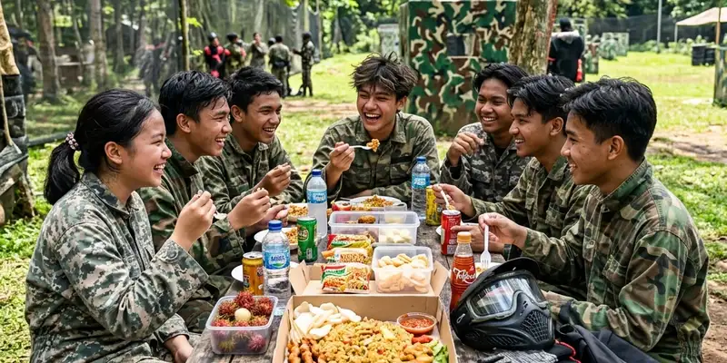

Paintball ulang tahun adalah konsep perayaan ulang tahun remaja yang menggabungkan permainan tembak-tembakan cat bersama teman sebagai pengganti pesta ulang tahun konvensional, cocok bagi remaja yang menyukai aktivitas fisik dan kompetisi tim.
Ringkasan Inti
- Paintball ulang tahun cocok untuk remaja yang menyukai aktivitas fisik dan permainan tim.
- Format permainan dapat disesuaikan agar tetap ringan dan aman untuk usia remaja.
- Persiapan acara meliputi pemilihan vendor, jumlah peserta, dan durasi permainan.
- Perlengkapan keselamatan tetap menjadi prioritas utama meski suasana acara santai.
- Kegiatan ini dapat dipadukan dengan sesi makan bersama atau dokumentasi foto setelah bermain.
Apa Itu Paintball Ulang Tahun?
Paintball ulang tahun adalah acara perayaan ulang tahun yang mengganti kegiatan pesta konvensional dengan sesi bermain paintball bersama teman-teman terdekat sang perayaan. Konsep ini populer di kalangan remaja karena menawarkan pengalaman yang lebih aktif dan berkesan dibanding pesta ulang tahun pada umumnya.
Acara ini biasanya diikuti oleh sekelompok teman sebaya yang dibagi menjadi beberapa tim, kemudian bermain dalam format war game ringan yang dirancang khusus agar tetap seru tanpa terlalu kompetitif atau melelahkan.
Bagaimana Cara Merencanakan Acara Paintball Ulang Tahun yang Seru?
Merencanakan acara paintball ulang tahun yang seru dimulai dengan menentukan jumlah peserta, memilih vendor yang berpengalaman menangani acara remaja, serta menyesuaikan format permainan dengan tema ulang tahun yang diinginkan. Komunikasi awal dengan vendor penting untuk memastikan seluruh kebutuhan acara dapat terpenuhi.
Setelah menentukan vendor, penyelenggara acara sebaiknya menyusun rundown kegiatan, termasuk waktu briefing keselamatan, sesi bermain, serta waktu istirahat, agar acara berjalan lancar tanpa terburu-buru.
Apa Saja yang Perlu Dipersiapkan Sebelum Acara Berlangsung?
Persiapan sebelum acara paintball ulang tahun berlangsung meliputi konfirmasi jumlah peserta, pemesanan paket ke vendor, serta memastikan seluruh peserta memahami aturan dasar keselamatan sebelum bermain. Persiapan pakaian yang sesuai, seperti baju lengan panjang dan sepatu tertutup, juga penting untuk kenyamanan peserta selama permainan.
Selain persiapan teknis, penyelenggara acara sebaiknya mengonfirmasi apakah vendor menyediakan perlengkapan keselamatan lengkap atau apakah peserta perlu membawa perlengkapan tambahan sendiri, agar tidak ada kendala pada hari pelaksanaan.

Kegiatan makan bersama setelah pertandingan adalah momen keakraban yang menyempurnakan perayaan ulang tahun.
Bagaimana Memilih Vendor untuk Acara Paintball Ulang Tahun?
Memilih vendor untuk acara paintball ulang tahun sebaiknya mempertimbangkan pengalaman vendor dalam menangani peserta remaja, kelengkapan perlengkapan keselamatan, serta fleksibilitas paket yang ditawarkan sesuai anggaran dan jumlah peserta. Vendor yang berpengalaman umumnya dapat memberikan rekomendasi format permainan yang sesuai dengan usia peserta.
Gemilang Katun Outbound merupakan salah satu penyedia layanan outbound dan paintball yang dapat dipertimbangkan untuk acara ulang tahun remaja, dengan pendampingan pemandu lapangan selama kegiatan berlangsung. Sebaiknya calon penyelenggara menghubungi vendor secara langsung untuk mendiskusikan detail paket, lokasi, dan jadwal yang tersedia.
Apa Tips agar Acara Paintball Ulang Tahun Berjalan Lancar?
Tips agar acara paintball ulang tahun berjalan lancar meliputi memastikan seluruh peserta mengikuti briefing keselamatan, membagi tim secara adil, serta menyediakan waktu istirahat di sela permainan agar peserta tidak kelelahan. Dokumentasi foto atau video selama acara juga dapat menjadi kenangan tambahan yang berkesan bagi peserta.
Penyelenggara juga disarankan menyiapkan sesi makan bersama atau kegiatan santai setelah bermain paintball, sehingga acara ulang tahun tetap terasa hangat dan personal meski dikemas dengan konsep yang lebih aktif.
Kesimpulan
Paintball ulang tahun dapat menjadi pilihan menarik bagi remaja yang ingin merayakan hari spesial dengan cara yang lebih aktif dan berkesan bersama teman-teman. Perencanaan yang matang, mulai dari pemilihan vendor hingga persiapan perlengkapan, menjadi kunci agar acara berjalan aman dan menyenangkan.
FAQ Seputar Paintball Ulang Tahun
Durasi acara dapat bervariasi tergantung paket yang dipilih, namun umumnya berkisar antara satu hingga beberapa jam termasuk sesi briefing dan istirahat.
Paintball ulang tahun cocok untuk pemula karena format permainan dan intensitas dapat disesuaikan dengan pengalaman peserta oleh pemandu lapangan.
Peserta sebaiknya membawa pakaian lengan panjang, sepatu tertutup, dan pakaian ganti, karena perlengkapan keselamatan utama biasanya sudah disediakan vendor.